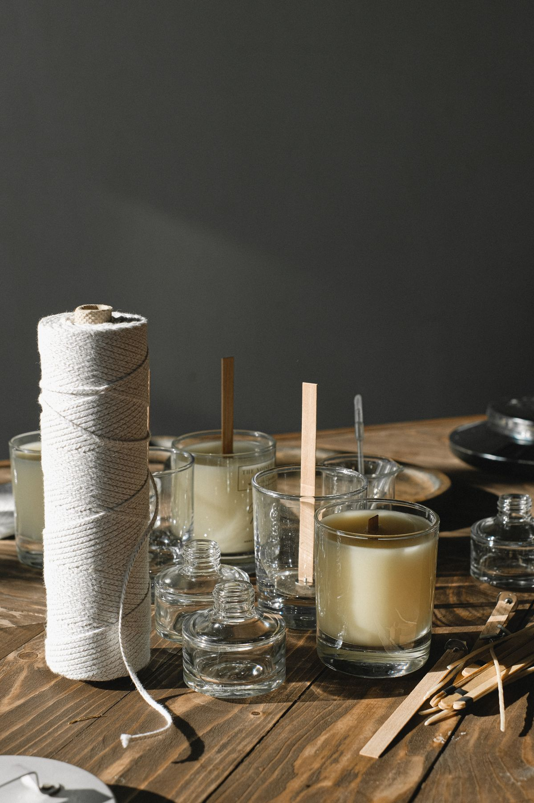

The West End First Kinara
Classic Set · December 2025
- The set
- Classic — seven 6 in pillars
- Wax
- 2.94 kg soy
- Kinara
- Low oak, child-height
- Poured
- 18 November 2025
- Collected
- 20 December 2025
The askDenise Carter’s family was keeping Kwanzaa for the first time. She wanted the full set and a kinara her six-year-old could reach without a chair — and she wanted the lighting order in writing, because she did not trust herself to remember which red was which.
What I pouredA Classic set with the low-profile oak kinara, and a printed ledger card that matches the one on the home page: night, principle, candle, seat. The black candle got the longest bench test of the batch — four hours, twice — because a first kinara has no spare.
How the week wentAll seven nights lit. At two hours an evening the black candle spent 14 of its 40 hours and stood through 1 January with wax to spare. In the second week of January, Denise came back and ordered a second Classic set — for her mother’s house in Decatur.
“Our first Kwanzaa, and I was nervous about getting the order wrong in front of the children. The set came with the ledger card, the black candle stood all seven nights, and my daughter read the principles off the card herself by night four.”